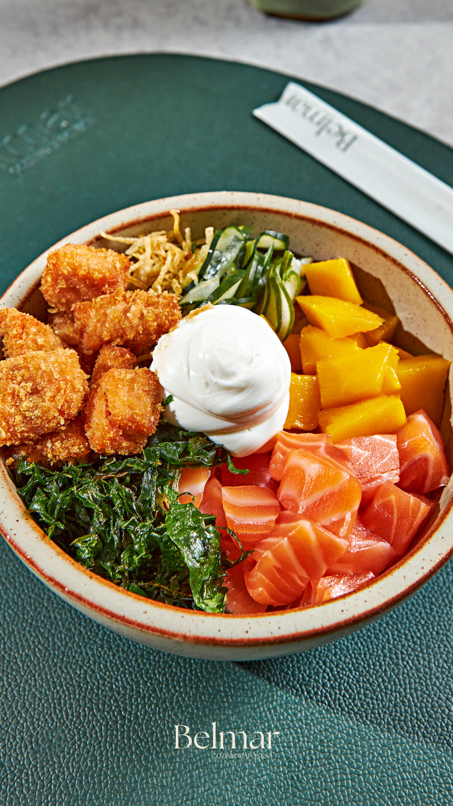

Belmar Cozinha Japonesa: inauguração em noite concorrida
A matéria destaca a inauguração do Belmar no Catuaí Shopping Londrina, com Daniela e Bruno Zanoni recebendo convidados em uma noite de grande repercussão.
Cozinha Japonesa
Ingredientes selecionados, técnica apurada e um ambiente que convida ao silêncio sofisticado.

O Belmar nasce de uma visão singular: oferecer uma experiência gastronômica japonesa que honra a tradição e abraça o contemporâneo. Cada detalhe foi pensado para criar momentos de beleza e sabor.
Nossa culinária é conduzida por ingredientes selecionados com rigor, técnicas apuradas ao longo de anos e uma filosofia de hospitalidade que vai além do serviço — é uma forma de cuidado.
"Servir é um ato de amor."

Arroz temperado com perfeição, frutos do mar selecionados e técnica japonesa autêntica.

Fatias delicadas de peixes nobres, servidas com molho especial e wasabi artesanal.

Confie ao chef a criação de um menu personalizado, uma jornada sensorial única.

Coquetéis autorais inspirados na estética japonesa, com ingredientes naturais e equilíbrio refinado.

Finalizações delicadas que encerram a refeição com suavidade e memória sensorial.

Preparações leves e elegantes que abrem o paladar para a experiência que está por vir.
Uma experiência ilimitada de sabores japoneses autênticos, preparados com técnica e dedicação para cada visita ser única e memorável.
Ver Cardápio
Um ambiente amplo, elegante e pensado para uma experiência mais contemplativa.
Drinks autorais e apresentação refinada para acompanhar a experiência da casa.
Peças montadas com precisão e uma estética que valoriza cada detalhe do serviço.
Ingredientes selecionados e finalização delicada para destacar textura e frescor.
Uma condução mais autoral, com ritmo e apresentação alinhados à proposta da casa.
Aberturas leves e elegantes que reforçam o tom sofisticado do ambiente.
Acompanhe os destaques e publicações sobre a nova fase do Belmar Cozinha Japonesa.
Abra o menu digital do Belmar para ver pratos, combinações e detalhes da experiência antes da sua visita, com leitura rápida e visual elegante.